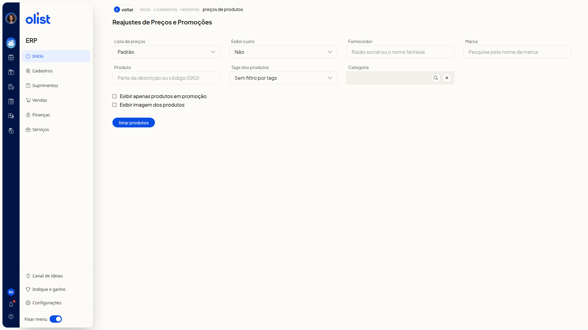

Reajuste de preços em massa de produtos
Descrição
A tela Reajustes de Preços e Promoções do ERP da Olist filtra os produtos de uma lista de preços e os lista para você informar um reajuste. Você monta essa listagem e segue para Informar reajuste.
Acesse Reajustes de Preços e Promoções no ERP. Na tela, filtre por lista de preços, exibição de custo, fornecedor, marca, produto, tags dos produtos e categoria. Você também pode restringir a listagem a produtos em promoção e optar por exibir a imagem dos produtos.
Pré-requisitos
- Tenha uma sessão autenticada no ERP.
- Tenha permissão para o relatório de preços de produtos para acessar Reajustes de Preços e Promoções.
- Tenha permissão para editar produtos para a ação Informar reajuste aparecer.
Importante
- Lista de preços: só aparece se você tiver permissão de lista de preços.
- Exibir custo: só aparece se você tiver permissão de preço de custo dos produtos.
- Custo da compra e Custo médio: só aparecem em Exibir custo se a empresa tiver permissão de DRE.
- Categoria: só aparece se a empresa tiver permissão de categorias de produtos.
- Exibir apenas produtos em promoção e Informar promoções: só aparecem se a empresa tiver permissão de preço promocional.
- Nenhum filtro é obrigatório.
Instruções
- Acesse a tela Reajustes de Preços e Promoções.
- Ajuste os filtros, se quiser.
Lista de preços e custo
- Lista de preços (opcional): na lista suspensa, selecione uma lista cadastrada na conta, como Padrão.
- Exibir custo (opcional): escolha Não, Custo da compra ou Custo médio.
Filtros de produto
- Fornecedor (opcional): digite o fornecedor.
- Marca (opcional): digite a marca.
- Produto (opcional): digite o produto.
- Tags dos produtos (opcional): selecione tags já cadastradas. Para não filtrar por tags, use Sem filtro por tags.
- Categoria (opcional): digite a categoria.
Opções de exibição
- Exibir apenas produtos em promoção (opcional): marque para restringir a listagem a produtos em promoção.
- Exibir imagem dos produtos (opcional): marque para exibir a imagem dos produtos.

- Clique em Listar produtos.
- Aguarde a mensagem Os dados do relatório estão sendo carregados. Por favor, aguarde. A tela mostra um percentual de progresso e, ao concluir, a listagem com as colunas Descrição, Código (SKU), Unidade e Preço e as ações Exibir filtros, Download, Informar reajuste e Informar promoções.
- Na listagem, clique em Informar reajuste.
Resultado
Depois de Listar produtos, a listagem da lista de preços mostra Descrição, Código (SKU), Unidade e Preço. A ação Informar reajuste fica disponível nessa listagem.
Links relacionados
Se precisar de ajuda para seguir com o reajuste, fale com o suporte.